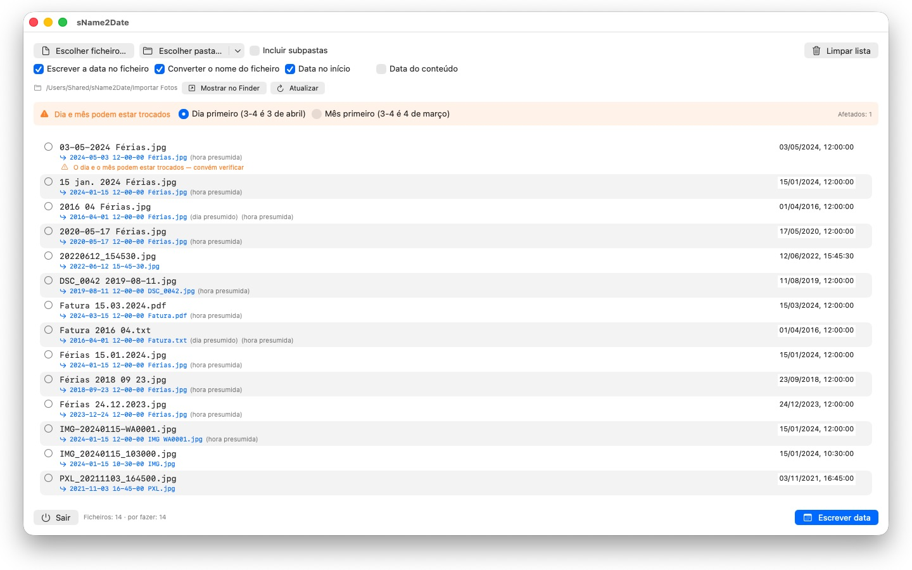
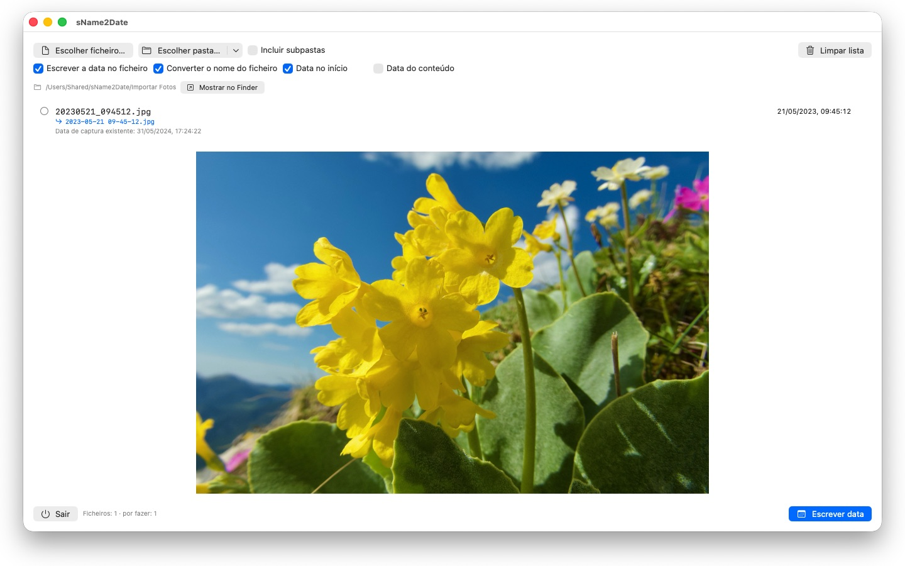

Fotografias sem data de captura não se arrumam em lado nenhum. O sName2Date tira a data do nome do ficheiro e escreve-a onde qualquer gestor de fotografias a procura.


Muitas fotografias e filmes trazem a data no nome do ficheiro — mas não onde os programas a procuram. Quem recebe imagens de uma conversa, de um digitalizador ou de um arquivo antigo fica com ficheiros como IMG_20240115_103000.jpg ou Férias 15.01.2024.jpg, que aparecem em qualquer gestor de fotografias com a data de hoje.
O sName2Date lê a data do nome do ficheiro e escreve-a como data de captura dentro do ficheiro. Se ainda não existir nenhuma, é criada.
GRAFIAS RECONHECIDAS
Data e hora nas formas correntes, entre outras:
- 2024-01-15 10-30-00
- IMG_20240115_103000
- IMG-20240115-WA0001
- 2024-01-15 · 2024 01 15 · 2024_01_15
- 15.01.2024 · 15-01-2024 · 15.01.24
- 15 jan. 2024 · 15 março 2024 · January 15 2024
- 2016 04 · 04-2016 — apenas ano e mês
Os nomes de mês por extenso são lidos no idioma do teu sistema e em inglês, tanto na forma longa como na abreviada.
Se o nome trouxer apenas a data, é assumida uma hora; qual delas, decides tu. Se faltar também o dia, vale o primeiro do mês — e a linha di-lo. Havendo várias datas no nome, ganha a primeira. E onde o dia e o mês fossem permutáveis, decide a tua definição — os ficheiros em causa ficam assinalados, em vez de adivinhados em silêncio.
Se o nome não tiver data alguma, indica-la tu à direita, na própria linha. Isso alcança até 1826, o ano da fotografia mais antiga que se conservou — imagens digitalizadas do século XIX podem assim ser datadas tal como as de ontem.
O QUE É ALTERADO
São escritos EXIF DateTimeOriginal e DateTimeDigitized, bem como TIFF DateTime; nos filmes e nas gravações de áudio, a data de criação dentro do contentor. Se quiseres, também a data de criação e de modificação do próprio ficheiro.
Os dados de imagem ficam intactos: um JPEG não é recomprimido, um filme não é recodificado. Nos filmes e nas gravações de áudio, a aplicação altera em regra apenas alguns bytes no contentor, em vez de o reescrever — mesmo um filme grande fica assim pronto num instante.
Uma data de captura é acolhida por JPEG, PNG, TIFF, HEIC e GIF, bem como pelos formatos de filme MP4, MOV e M4V e pelos formatos de áudio M4A e M4B.
TAMBÉM FICHEIROS QUE NÃO PODEM TER DATA DE CAPTURA
Um PDF, um ficheiro de texto, uma folha de cálculo não têm campo algum para uma data de captura — e ainda assim entram na lista. O sName2Date define neles a data de criação e de modificação do ficheiro, o único sítio a que a indicação pode chegar; a linha mostra-o com um visto laranja em vez de um verde. Aqui não conta a extensão: PDF, texto, folhas de cálculo, arquivos, tudo.
Se o ficheiro não deve ser tocado, tiras no topo da janela a opção Escrever a data no ficheiro. O sName2Date limita-se então a pôr o nome na grafia ISO: Fatura 15.03.2024.pdf passa a 2024-03-15 12-00-00 Fatura.pdf, e no Finder a pasta fica ordenada por data. Se preferires, a data fica onde estava no nome, em vez de passar para a frente.
TUDO SE PODE ANULAR
Uma passagem anula-se por completo com Cmd+Z — data de captura, marcas temporais do ficheiro e o nome alterado. Cmd+Shift+Z volta a aplicá-la.
PASTAS INTEIRAS
sName2Date aceita árvores de pastas inteiras de uma só vez e pode ignorar ficheiros que já tenham uma data de captura. As pastas autorizadas uma vez ficam memorizadas e nunca mais são pedidas.
sName2Date Lite · Gratuito — A edição para um ficheiro de cada vez: escrever a data do nome do ficheiro como data de captura numa fotografia, num filme ou numa gravação de áudio, defini-la manualmente, passar o nome para a notação ISO e desfazer tudo com ⌘Z – as mesmas capacidades do sName2Date, só que sem pastas inteiras.
- Requer macOS 12 ou posterior
- 25 idiomas
- Suporte: SwiftAppsBavaria@gmx.net
Mais aplicações
SwiftRename
Alterar o nome de ficheiros em lote – pela data da câmara, com numeração sequencial ou logo organizados em pastas de ano e mês.
sVectorLift
Abrir, ver e guardar clipart vetorial antigo como SVG – CorelDRAW, Windows Metafile e CGM.
sCollect
Organizar música, filmes, audiolivros, e-books e outras coleções numa mediateca. Nos formatos habituais, cada dado fica gravado na tag do próprio ficheiro e não apenas na base de dados – com suporte completo de ID3v2.4. Os MP3 podem ser exportados como cópia para o iTunes e a app Música sem que vários artistas sejam cortados; a mediateca inteira é exportada como XML do iTunes. Reproduz quase todos os formatos, diretamente ou através de um leitor externo.
sCollectPlay
O leitor da mediateca: reproduzir música, filmes, audiolivros e podcasts simplesmente de uma pasta, de um XML do iTunes ou de uma mediateca do sCollect – sem alterar nada nas tags dos ficheiros. Com playlists, faixas de áudio e de legendas e, nos filmes, câmara lenta e avanço imagem a imagem. O que o macOS não reproduz sozinho, como MKV, AVI ou DSD, é enviado para um leitor externo.
sCollectPlay Lite
A edição simplificada do sCollectPlay: abrir simplesmente uma pasta, um XML do iTunes ou uma mediateca do sCollect e reproduzir daí música, filmes, audiolivros e podcasts – com playlists, faixas de áudio e de legendas, câmara lenta e avanço imagem a imagem. Uma fonte por sessão; o navegador de colunas, as playlists próprias e as fontes usadas recentemente ficam reservados à versão completa.
sBikeBridge
Analisar voltas de bicicleta sem as carregar num portal: importar ficheiros FIT de qualquer ciclocomputador que grave neste formato, bem como GPX e TCX. As voltas ficam numa biblioteca própria no Mac – com mapa, potência e frequência cardíaca, fotografias e notas; os duplicados são detetados na importação. Indicadores por ano ou mês e filtros por distância, desnível acumulado e duração tornam as voltas comparáveis. Se desejado, o mapa também está disponível offline.